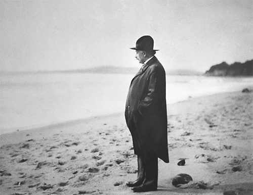

Einstein trên bãi biển Santa Barbara, năm 1933
Một tối nọ ở Berlin, tại một bữa tiệc mà cả Einstein và vợ cùng tham dự, có một vị khách bày tỏ niềm tin vào chiêm tinh học. Einstein chế giễu, cho quan niệm này là mê tín. Một vị khách khác thấy thế bèn góp lời và thể hiện sự xem thường tương tự với tôn giáo. Ông ta quả quyết, tin vào Thượng đế thì cũng mê tín chẳng kém.
Đến lúc này, người chủ bữa tiệc cố chặn lời vị khách kia lại, và bảo rằng đến cả Einstein cũng đặt niềm tin nơi tôn giáo.
“Không thể nào,” vị khách thốt lên hoài nghi rồi quay sang hỏi Einstein có đúng ông là người mộ đạo không.
“Có thể cho là như vậy,” Einstein điềm tĩnh đáp. “Hãy thử thâm nhập các bí mật của tự nhiên bằng những phương tiện hữu hạn của chúng ta, ông sẽ thấy rằng đằng sau tất cả những quy luật, những mối liên kết khả phân này có điều gì đó vi tế, vô hình và khó lòng giải thích. Sự tôn kính dành cho lực lượng siêu việt khỏi bất cứ điều gì mà chúng ta hiểu được là tôn giáo của tôi. Trong giới hạn đó, quả thật tôi là kẻ mộ đạo.”
Hồi còn nhỏ, Einstein từng trải qua một giai đoạn ngoan đạo đến độ luôn trong trạng thái nhập định, rồi sau đó chống lại nó. Trong ba thập kỷ tiếp theo, ông không phát biểu nhiều về chủ đề này. Nhưng quanh khoảng thời gian ở tuổi 50, ông bắt đầu tuyên bố rõ ràng – trong các bài viết, bài phỏng vấn và những bức thư – sự trân trọng ngày càng sâu sắc trước di sản Do Thái, và phần nào tách biệt là đức tin của ông dành cho Thượng Đế, dù bản thân khái niệm đó có phần phi nhân và mang tính thần luận.
Có lẽ có nhiều lý do cho điều này ngoài xu hướng tự nhiên hướng đến việc chiêm ngẫm về cái trường cửu thường thấy ở những người trong độ tuổi 50. Mối liên cảm mà ông có với những người anh em Do Thái do những áp bức mà họ liên tục phải chịu đựng đưa tới đã đánh thức trong ông một số cảm thức tôn giáo. Tuy nhiên, những đức tin của ông chủ yếu xuất phát từ sự kinh ngạc và cảm nhận về một trật tự siêu việt mà ông phát hiện thông qua chính công việc nghiên cứu khoa học của mình.
Bất kể là khi theo đuổi vẻ đẹp của các phương trình trường hấp dẫn hay khi bác bỏ tính bất định trong cơ học lượng tử, ông đều thể hiện đức tin sâu sắc vào tính chặt chẽ của vũ trụ. Đó là cơ sở cho nhãn quan khoa học và cả nhãn quan tôn giáo của ông. Năm 1929, ông viết: “Cảm giác mãn nguyện tột bậc mà một người làm khoa học có được” là đi đến chỗ nhận ra rằng “có lẽ Thượng Đế không sắp xếp các mối liên kết này theo cách nào khác ngoài cách hiện tồn, cũng như có lẽ việc biến số 4 thành số nguyên tố cũng nằm trong quyền năng của Người mà thôi.”
Đối với Einstein cũng như đối với đại đa số mọi người, niềm tin vào một điều lớn lao hơn bản thân trở thành một cảm thức bền vững. Nó tạo ra trong ông một hợp cảm tự tin và khiêm nhường, và hợp cảm này càng mạnh lên trước tính giản minh tuyệt vời [của tự nhiên]. Nếu xét tới khuynh hướng chỉ tập trung vào bản thân của ông, những cảm thức này quả là những thái độ đáng hoan nghênh. Cùng với khiếu hài hước và khả năng tự ý thức cao, tất cả giúp ông tránh được sự vờ vịt và tính khoa trương có thể tiêm nhiễm vào bộ óc nổi tiếng nhất thế giới.
Những cảm giác kinh ngạc và khiêm nhường đầy tinh thần mộ đạo này cũng báo trước thái độ của ông đối với vấn đề công bằng xã hội. Nó khiến ông nhún mình trước các biểu tượng thứ bậc hay phân biệt tầng lớp, tránh chủ nghĩa vật chất và tiêu dùng thái quá, và hết mình trong các nỗ lực vì lợi ích của những người tị nạn và bị đàn áp.
Chẳng bao lâu sau sinh nhật lần thứ 50, Einstein đã có một cuộc phỏng vấn đáng nhớ, khi đó ông bộc lộ nhiều hơn bao giờ hết tư duy về tôn giáo của mình. Đó là cuộc phỏng vấn với một nhà thơ khoa trương nhưng biết cách lấy lòng, một nhà tuyên truyền tên là George Sylvester Viereck, vốn sinh ra ở Đức, nhưng chuyển tới Mỹ từ nhỏ, sau đó dành cả đời viết những bài thơ gợi dục màu mè, phỏng vấn những người vĩ đại, thể hiện một thứ tình yêu phức tạp đối với vùng đất của tổ tiên mình.
Vì từng có những cuộc phỏng vấn với đủ các nhân vật từ Freud, Hitler cho đến nhà vua để cuối cùng xuất bản một cuốn sách mang tên Glimpses of the Great [Chân dung những con người vĩ đại], nên ông ta có thể xin được một cuộc hẹn trò chuyện với Einstein tại căn hộ của ông ở Berlin. Ở đó, Elsa phục vụ nước quả mâm xôi và salad hoa quả. Sau đó hai người đi lên phòng làm việc – chốn ẩn dật của Einstein. Chẳng hiểu vì lẽ gì Einstein lại tưởng Viereck là người Do Thái. Thực tế thì Viereck thường tự hào khoe mình là dòng dõi hoàng gia, sau này ông ta ủng hộ Đức Quốc xã và bị bỏ tù ở Mỹ trong Chiến tranh Thế giới Thứ hai vì tuyên truyền cho nước Đức.
Viereck mở đầu bằng việc hỏi Einstein xem ông tự xem mình là người Đức hay Do Thái. Einstein trả lời: “Có lẽ là cả hai. Chủ nghĩa dân tộc là một căn bệnh ấu trĩ, bệnh sởi của nhân loại.”
Người Do Thái có nên cố gắng hòa nhập hay không? “Chúng tôi, người Do Thái, có quá nhiều khát khao nên không thể hy sinh đặc tính của mình để tuân phục được.”
Ông chịu ảnh hưởng của Cơ Đốc giáo đến mức nào? “Hồi nhỏ, tôi tiếp nhận cả lời dạy trong Kinh Thánh và lời dạy trong kinh Talmud. Tôi là một người Do Thái, nhưng lại mê hình ảnh Chúa Jesus với hào quang lấp lánh.”
Ông thừa nhận rằng Chúa Jesus thật sự tồn tại trong lịch sử? “Đương nhiên rồi. Không ai đọc Phúc âm mà lại không cảm thấy sự hiện hữu thật sự của Chúa Jesus. Tính cách của Ngài làm ta rung động trong từng câu chữ. Không một huyền thoại nào lại tràn đầy sức sống đến thế.”
Ông có tin vào Thượng đế không? “Tôi không phải là một người vô thần. Vấn đề đó quá lớn lao đối với đầu óc hữu hạn của chúng ta. Chúng ta giống như một đứa trẻ bước vào một thư viện lớn đầy những cuốn sách được viết bằng đủ các thứ tiếng. Đứa trẻ đó biết có người chắc chắn đã đọc hết những cuốn sách ở đây. Nó chỉ không biết làm thế nào để đọc được mà thôi. Nó không hiểu các ngôn ngữ được viết trong đó. Nó ngờ ngợ rằng có một trật tự bí ẩn trong cách trình bày các cuốn sách nhưng không biết trật tự đó là gì. Đối với tôi, có vẻ đây thậm chí là thái độ khôn ngoan nhất về Thượng đế. Chúng ta thấy vũ trụ được tuân theo một trật tự tuyệt đẹp và những quy luật nhất định, nhưng chúng ta chỉ hiểu lờ mờ về những quy luật này.”
Đây có phải là quan niệm của người Do Thái về Thượng đế không? “Tôi là người theo thuyết tất định. Tôi không tin vào ý chí tự do. Người Do Thái tin vào ý chí tự do. Họ tin rằng con người tự định hình cuộc sống của mình. Tôi phản đối học thuyết đó. Nếu xét ở khía cạnh này, tôi không phải là một người Do Thái.”
Đây có phải là Thượng đế của Spinoza không? “Tôi mê thuyết phiếm thần của Spinoza, nhưng tôi còn ngưỡng mộ ông hơn nữa vì đóng góp của ông cho tư duy hiện đại, ông là triết gia đầu tiên bàn về linh hồn và cơ thể xét như một thể thống nhất, chứ không tách biệt.”
Làm sao ông có được các ý tưởng của mình? “Tôi có máu nghệ sĩ đủ để tự do phóng bút bằng trí tưởng tượng của mình. Trí tưởng tượng quan trọng hơn kiến thức. Kiến thức thì hữu hạn. Trí tưởng tượng thì ôm trọn cả thế giới.”
Ông có tin vào sự bất tử không? “Không. Và đối với tôi, một cuộc đời là đủ rồi.”
Einstein cố gắng thể hiện thật rõ những cảm giác này, cho chính ông lẫn những người muốn có được từ ông một câu trả lời đơn giản về đức tin của ông. Do đó, vào mùa hè năm 1930, trong khi chèo thuyền và chiêm ngẫm ở Caputh, ông đã soạn một tuyên ngôn về đức tin: “Điều tôi tin tưởng”. Tuyên ngôn này kết lại bằng lời giải thích ý của ông khi ông tự gọi mình là người mộ đạo:
Cảm xúc đẹp nhất mà ta có thể trải nghiệm là cảm xúc huyền bí. Đó là cảm xúc nền tảng nằm nơi khởi nguồn của toàn bộ nền nghệ thuật và khoa học đích thực. Một kẻ dửng dưng không có cảm xúc này, không còn băn khoăn hay say sưa kinh ngạc thì cũng như đã chết rồi, chẳng khác nào một ngọn nến đã tắt. Cảm thức rằng đằng sau bất cứ gì mà ta trải nghiệm vẫn còn có một điều mà tâm trí ta không thể nắm bắt, một điều mà vẻ đẹp và tính siêu phàm của nó chỉ đến với chúng ta một cách gián tiếp: Đó chính là lòng mộ đạo. Theo nghĩa này, và chỉ theo nghĩa này thôi, tôi là một người mộ đạo thuần thành.
Tuyên ngôn này được đánh giá là mang tính gợi mở, thậm chí truyền cảm hứng, và được in nhiều lần, dịch ra nhiều ngôn ngữ khác nhau. Tuy nhiên, chẳng có gì ngạc nhiên, nó không thỏa mãn những người muốn một câu trả lời đơn giản, trực tiếp đối với câu hỏi liệu ông có tin vào Thượng đế hay không. Kết quả là, nỗ lực thúc ép Einstein trả lời dứt khoát câu hỏi này đã thay thế cho cơn cuồng cố bắt ông giải thích thuyết tương đối trong đúng một câu trước kia.
Một chủ ngân hàng ở Colorado viết thư nói ông ta đã nhận được câu trả lời của 24 người đoạt giải Nobel cho câu hỏi liệu người đó có tin vào Thượng đế hay không, và ông ta đề nghị Einstein trả lời. Einstein đáp trong một bức thư: “Tôi không thể quan niệm một Thượng đế hữu ngã trực tiếp tác động tới hành động của các cá nhân hoặc ngồi một chỗ phán xét các tạo vật do chính Ngài tạo ra. Lòng mộ đạo của tôi bao gồm cả lòng thán phục và khiêm nhường trước tinh thần siêu việt vô tận đã khai mở chút ít cho mình về những gì mà chúng ta có thể hiểu được về thế giới khả giác. Xác tín cảm tính về sự hiện diện của một lực lượng siêu việt, được nhận ra trong việc quan sát một vũ trụ khó hiểu, làm nên quan điểm của tôi về Thượng đế.”
Một cô bé học lớp 6 của một trường Chủ nhật ở New York lại đặt câu hỏi dưới dạng hơi khác. Cô bé hỏi: “Các nhà khoa học có cầu nguyện không ạ?” Einstein trả lời cô bé bằng một cách nghiêm túc. Ông giải thích: “Nghiên cứu khoa học dựa trên quan điểm cho rằng mọi hiện tượng diễn ra đều bị quy định bởi quy luật tự nhiên, và điều này đúng với hành động của con người. Vì thế, một nhà khoa học sẽ khó nghiêng về niềm tin rằng các sự việc có thể bị ảnh hưởng bởi lời cầu nguyện, tức lời cầu ước được nói chuyện với một Đấng siêu nhiên.”
Tuy nhiên, nói như vậy không có nghĩa là không có Đấng Toàn năng, không có linh hồn nào cao vượt hơn chúng ta. Ông tiếp tục giải thích với cô bé:
Tất cả những ai nghiêm túc tham gia hành trình khám phá khoa học đều dần tin rằng có một tinh thần được biểu lộ trong các quy luật của vũ trụ – một tinh thần siêu việt so với tinh thần của con người, một tinh thần mà khi con người chúng ta, với năng lực hạn chế của mình, được diện kiến, chúng ta sẽ kính ngưỡng làm sao. Theo cách này, khao khát khám phá khoa học dẫn tới một cảm giác mộ đạo đặc biệt, khác hẳn lòng mộ đạo của một người khờ khạo.
Đối với một số người, chỉ có niềm tin minh nhiên vào Thượng đế hữu ngã đang điều khiển cuộc sống hằng ngày của chúng ta mới là câu trả lời thỏa đáng, còn các quan điểm của Einstein về một tinh thần vũ trụ vô ngã, cũng như các thuyết tương đối của ông, thì chỉ xứng đáng với những cái nhãn mà chúng được gán cho. “Tôi rất nghi ngờ việc Einstein thật sự biết ông ta đang hướng đến đâu,” Hồng y William Henry O’Connell ở Boston nhận định. Nhưng có một điều có vẻ rõ ràng. Đó là thái độ vô thần. “Kết quả của sự nghi ngờ này và sự phỏng đoán mờ mịt về thời gian và không gian [ở Einstein] là cái lốt mà bóng ma vô thần ẩn nấp trong đó.”
Lời công kích công khai của vị Hồng y Giáo chủ khiến một lãnh tụ Do Thái Chính thống ở New York, giáo sĩ Herbert S. Goldstein phải đánh điện trực tiếp cho Einstein: “Anh có tin vào Thượng đế hay không? Chấm. Điện trả lời đã được trả phí. 50 từ.” Einstein chỉ sử dụng nửa số từ được cho. Nó trở thành câu trả lời nổi tiếng nhất trong các câu trả lời của ông về vấn đề này: “Tôi tin vào Thượng đế của Spinoza, người thấy được chính mình trong sự hài hòa thuộc về quy luật của tất cả những gì hiện hữu, chứ không phải một Thượng đế hữu ngã chỉ bận tâm đến số phận và việc làm của con người.”
Không phải ai cũng vừa lòng với câu trả lời của Einstein. Chẳng hạn, một số tín đồ Do Thái mộ đạo đã lưu ý rằng Spinoza đã bị cộng đồng Do Thái ở Amsterdam rút phép thông công vì mang giữ những đức tin này, và không chỉ có vậy, ông còn bị Giáo hội Công giáo lên án. “Lẽ ra là tốt hơn nếu Hồng y O’Connell không công kích học thuyết của Einstein,” một giáo sĩ Do Thái ở Bronx nhận định. “Và lẽ ra là tốt hơn nếu Einstein không tuyên bố sự hoài nghi của mình đối với một Thượng đế trông quản số phận và hành động của các cá nhân. Cả hai đều đưa ra những tuyên bố vượt ngoài mức mà họ có đủ năng lực để nhận định.”
Tuy nhiên, đa số mọi người đều thấy hài lòng, dù họ có đồng ý hoàn toàn hay không, vì họ có thể hiểu những gì Einstein nói. Quan điểm về một Thượng đế vô ngã có quyền năng sáng tạo nhưng lại không can thiệp sự hiện hữu hằng ngày là một phần của truyền thống đáng quý ở cả châu Âu và Mỹ. Người ta có thể tìm thấy quan điểm này nơi một số triết gia mà Einstein yêu mến, và nó thống nhất với niềm tin tôn giáo của nhiều quốc phụ của nước Mỹ như Jefferson và Franklin.
Một số tín đồ gạt bỏ những dẫn chứng thường xuyên của Einstein về Thượng đế, họ cho đó thuần túy là một lối nói ngụy biện. Những người hoài nghi cũng nghĩ như vậy. Ông sử dụng nhiều cụm từ, một số mang ý tếu táo, từ der Herrgott (Đức Chúa) đến der Alte (Ông Cụ). Nhưng Einstein không phải là loại người giảo hoạt tỏ vẻ quy phục. Thực tế là ngược lại. Vì vậy, chúng ta nên tôn trọng ông bằng việc tin vào lời ông nói khi ông khẳng định nhiều lần rằng những cụm từ thường dùng này không phải là cách để ngụy trang ngữ nghĩa nhằm che giấu chủ nghĩa vô thần.
Trong suốt cuộc đời mình, ông luôn phản bác cáo buộc cho rằng ông là người vô thần. Ông nói với một người bạn: “Có những người nói rằng Thượng đế không tồn tại. Nhưng điều khiến tôi thật sự nổi giận là họ trích dẫn lời tôi để củng cố cho những quan điểm đó.”
Không giống như Sigmund Freud, Bertrand Russell hay George Bernard Shaw, Einstein không bao giờ cảm thấy cần phải bôi xấu những người tin vào Thượng đế; thay vào đó, ông thường chế giễu những người vô thần. Ông giải thích: “Điều tách biệt tôi với đa số những người gọi là vô thần kia là cảm giác muốn cúi phục hoàn toàn trước những bí mật chẳng thể thấu đạt về sự trật tự hài hòa của vũ trụ.”
Quả thật, Einstein có xu hướng chỉ trích những kẻ thích soi mói, thiếu khiêm nhường hoặc không biết tôn kính gì, hơn là những tín đồ mộ đạo. Ông giải thích trong một bức thư: “Những kẻ cuồng tín vào vô thần giống như những nô lệ vẫn còn trên vai sức nặng của xiềng xích mà mình đã vứt bỏ sau bao nỗ lực đấu tranh gian khó. Họ là những sinh linh mang cơn hằn thù với tôn giáo truyền thống, xem đó là ‘thuốc phiện của nhân dân’, và chẳng thể nghe được tiếng nhạc của các tinh cầu.”
Sau này, Einstein tham gia một cuộc trao đổi về chủ đề này với một Thiếu úy Hải quân Hoa Kỳ mà ông chưa từng gặp mặt. Chàng Thiếu úy hỏi, có đúng là ông đã được một linh mục dòng Tên giáo hóa để tin vào Thượng đế không? Chuyện này thật vớ vẩn, Einstein trả lời. Rồi ông nói tiếp, ông cho rằng niềm tin rằng Thượng đế mang hình ảnh một người cha là kết quả của “những phép loại suy trẻ con”. Chàng ta lại hỏi Einstein xem liệu anh ta có được dẫn ra câu trả lời của ông trong các cuộc tranh luận với những người bạn cùng tàu mộ đạo hơn không. Einstein cảnh báo anh ta chớ nên đơn giản hóa thái quá. Ông giải thích: “Anh có thể gọi tôi là người theo thuyết bất khả tri, nhưng tôi không có chung tinh thần tranh đấu theo kiểu những người vô thần chuyên nghiệp, những người mà tinh thần sôi nổi của họ chủ yếu là do sự giải phóng đau đớn khỏi xiềng xích của những giáo điều tôn giáo mà họ chịu nhận khi còn thơ dại. Tôi thích thái độ khiêm nhường tương ứng với sự hạn hẹp trong tri thức của chúng ta về bản chất và sự tồn tại của chính mình.”
Bản năng mộ đạo này liên quan như thế nào tới khoa học của ông? Đối với Einstein, vẻ đẹp của đức tin trong ông nằm ở chỗ nó cung cấp thông tin và truyền cảm hứng hơn là đối nghịch với công việc khoa học của ông. Ông nói: “Cảm giác sùng bái trật tự vũ trụ là động lực mạnh mẽ nhất và cao quý nhất cho nghiên cứu khoa học.”
Về sau, Einstein giải thích quan điểm của mình về mối quan hệ giữa khoa học và tôn giáo tại một hội nghị về đề tài này tại Đại Chủng viện Tin Lành [Union Theological Seminary] ở New York. Công việc của khoa học, ông nói, là khẳng định cái gì là đúng, chứ không phải là để đánh giá suy nghĩ và hành động của con người về cái nên đúng. Nhiệm vụ của tôn giáo thì ngược lại. Thế nhưng, các nỗ lực của mỗi lĩnh vực có nhiều lúc song hành cùng nhau. Ông nói: “Khoa học chỉ có thể được những người hoàn toàn thấm nhuần khao khát hướng tới chân lý và tri thức tạo lập. Nguồn cảm hứng này, tuy nhiên, lại xuất phát từ tôn giáo.”
Cuộc nói chuyện được đưa lên trang nhất và kết luận súc tích của ông trở nên nổi tiếng: “Có thể diễn tả tình huống này bằng một hình ảnh: khoa học không có tôn giáo thì què quặt, tôn giáo không có khoa học thì đui mù.”
Tuy nhiên, Einstein nói tiếp, có một khái niệm tôn giáo mà khoa học không thể chấp nhận: Một vị Chúa trời có thể tùy ý can thiệp vào các sự kiện xảy ra đối với những tạo vật của mình, hay can thiệp cuộc đời của những chúng sinh vốn được mình ban cho sự sống. Ông lập luận: “Nguồn gốc chính của những mâu thuẫn hiện nay giữa tôn giáo và khoa học nằm ở khái niệm Thượng đế hữu ngã.” Các nhà khoa học hướng tới việc khám phá các quy luật bất biến chi phối thực tại, và khi làm vậy, họ phải bác bỏ ý niệm cho rằng ý chí thần thánh, hoặc vì đó mà ý chí con người, sẽ đóng vai trò xâm phạm mối quan hệ nhân quả của vũ trụ.
Niềm tin vào nguyên lý nhân quả tất định, vốn là một đặc điểm cố hữu trong nhãn quan khoa học của Einstein, không chỉ mâu thuẫn với khái niệm Thượng đế hữu ngã. Nó cũng, ít nhất là trong suy nghĩ của Einstein, không tương thích với ý chí tự do của con người. Dù ông là một người sống đạo đức, song niềm tin của ông vào chủ nghĩa tất định tuyệt đối khiến ông khó chấp nhận quan điểm về các lựa chọn luân lý và trách nhiệm cá nhân, vốn là tâm điểm trong hầu hết các hệ thống đạo đức.
Cả các nhà thần học người Do Thái và các nhà thần học Cơ Đốc giáo đều cho rằng con người có ý chí tự do và phải chịu trách nhiệm về hành động của mình. Họ thậm chí có thể tự do chọn bất tuân ý Chúa, như trong Kinh thánh, bất chấp điều này có vẻ mâu thuẫn với niềm tin rằng Chúa toàn năng biết tất cả mọi điều và nắm giữ mọi sức mạnh.
Trong khi đó, Einstein, cũng giống như Spinoza, cho rằng những hành động của con người cũng bị quy định chẳng kém gì một quả bóng bi-a, một hành tinh hay một ngôi sao. Einstein nói rõ trong một tuyên bố gửi Hội Spinoza năm 1932: “Con người không tự do trong suy nghĩ, cảm xúc và hành động của mình, mà bị ràng buộc trong quan hệ nhân quả như các vì sao đang chuyển động vậy.”
Ông tin rằng, hành động của con người bị quy định bởi cả các quy luật tâm lý và vật lý, điều đó nằm ngoài tầm kiểm soát của họ. Đây là khái niệm ông rút ra sau khi đọc Schopenhauer, người mà trong bản tuyên ngôn “Điều tôi tin tưởng” năm 1930 đã được Einstein gán cho một câu châm ngôn trong những dòng sau:
Tôi chẳng tin vào ý chí tự do theo nghĩa triết học. Hành động của con người không chỉ chịu sự thôi thúc bên ngoài, mà còn thích đáng với nhu cầu bên trong. Câu nói của Schopenhauer: “Người ta có thể làm những gì mình muốn, nhưng lại chẳng thể muốn điều mình muốn” quả thật là nguồn cảm hứng cho tôi từ khi còn trẻ, đó là một nguồn không ngừng xoa dịu tôi cũng như những người khác trước những khó khăn trong cuộc sống, và là một mạch nguồn an lành bất tận.
Ông có tin con người là những kẻ tự do không, Einstein từng được hỏi như vậy. Ông trả lời: “Không, tôi là một người theo thuyết tất định. Mọi thứ đều được quyết định sẵn, lúc mở đầu cũng như khi kết thúc, bằng các lực mà chúng ta không kiểm soát được. Nó được quyết định sẵn cho các con côn trùng cũng như các vì tinh tú. Con người, rau cỏ, hay những vẩn bụi trong vũ trụ, tất cả đều đang xoay mình trong một điệu nhạc bí ẩn được chơi từ xa bởi một tay chơi vô hình.”
Một số người bạn, như Max Born, phát hoảng vì cho rằng thái độ này của Einstein làm suy yếu hoàn toàn nền tảng đạo đức con người. Born viết cho Einstein: “Tôi không thể hiểu nổi làm sao anh có thể kết hợp toàn bộ vũ trụ cơ học với sự tự do của cá nhân có đạo đức. Đối với tôi, thế giới tất định thật đáng sợ. Có thể anh đúng và thế giới là như thế, như anh nói. Nhưng hiện tại nó không thật sự là thế trong vật lý, thậm chí thế giới còn lại còn ít giống hơn nữa.”
Đối với Born, tính bất định của lượng tử đưa tới một lối thoát cho nan đề này. Giống như một số triết gia cùng thời, ông bám lấy tính bất định cố hữu trong cơ học lượng tử để “giải quyết sự thiếu nhất quán giữa tự do luân lý và các quy luật tự nhiên nghiêm ngặt”. Einstein thừa nhận rằng cơ học lượng tử đặt ra một dấu chấm hỏi về tính tất định nghiêm ngặt, nhưng ông nói với Born rằng ông vẫn tin vào tính tất định đó, kể cả trong hành động cá nhân lẫn trong vật lý.
Born giải thích vấn đề này cho người vợ dễ kích động của mình, Hedwig, người luôn hăm hở tranh luận với Einstein. Hedwig nói với Einstein rằng, giống như ông, bà cũng “không thể tin vào một vị Thượng Đế ‘chơi trò tung xúc xắc’”. Nói cách khác, không như chồng mình, bà phản đối quan điểm cơ học lượng tử cho rằng vũ trụ dựa trên cái bất định và xác suất. Tuy nhiên, bà nói thêm: “Tôi cũng không thể hình dung nổi là anh tin – như lời Max kể với tôi – ‘sự chi phối tuyệt đối của các quy luật’ có nghĩa là mọi thứ đều được định đoạt từ trước, chẳng hạn việc tôi có định cho con tôi tiêm phòng hay không.” Điều đó, bà chỉ ra, là dấu chấm hết với mọi luân lý.
Theo triết lý của Einstein, cách giải quyết vấn đề này là nhìn nhận ý chí tự do như là cái hữu ích, và thực tế là cần thiết, cho một xã hội văn minh, bởi nó buộc người ta phải có trách nhiệm đối với hành động của chính mình. Hành động như thểngười ta có trách nhiệm đối với hành động của mình sẽ nhắc nhở họ, cả về mặt tâm lý lẫn thực tế, là phải hành động có trách nhiệm hơn. Ông giải thích: “Tôi bị thôi thúc hành động như thể là ý chí tự do tồn tại bởi nếu tôi muốn sống trong một xã hội văn minh, tôi phải hành động một cách có trách nhiệm.” Thậm chí ông cũng có thể cho rằng người khác phải chịu trách nhiệm cho những hành động tốt cũng như xấu của họ vì đó là một lối sống vừa thực tế vừa hợp lý trong khi vẫn quan niệm ở góc độ tri thức rằng hành động mọi người đều được định trước. Ông nói: “Tôi biết rằng về mặt triết học thì một kẻ sát nhân chẳng có trách nhiệm gì với tội ác của mình, nhưng tôi vẫn không muốn uống trà với anh ta.”
Xin nói đôi lời biện hộ cho Einstein, cũng như Max và Hedwig Born. Chúng ta cần lưu ý rằng các triết gia qua bao thời đại đã đấu tranh, đôi khi một cách vụng về và không thành công, để hòa giải ý chí tự do với sự tất định và một vị Thượng đế toàn tri. Dù Einstein có giỏi hay kém hơn trong việc nắm giữ nút thắt này so với những người khác, thì có một thực tế cần chú ý về ông là ông có thể phát triển và thực hành một đạo đức cá nhân mạnh mẽ, chí ít là trong việc hành xử với con người nói chung nếu không phải luôn là đối với những người thân trong gia đình, và điều đó không bị cản trở bởi những tư biện triết học không thể giải quyết này. “Nỗ lực quan trọng nhất của con người,” ông viết cho một linh mục ở Brooklyn, “là phấn đấu để các hành động của mình đúng với luân lý. Sự cân bằng nội tâm và cả sự hiện hữu của chúng ta nữa đều phụ thuộc cả vào nó. Chỉ có hành động luân lý mới có thể làm đẹp cuộc sống và mang lại cho nó chân giá trị.”
Ông tin rằng nền tảng đạo đức cao hơn “con người cá nhân thuần túy” để mỗi cá nhân sống sao cho có ích với nhân loại. Có những lúc ông có thể nhẫn tâm với cả những người thân thuộc nhất, điều này cho thấy, cũng như tất cả chúng ta, ông còn những khiếm khuyết. Thế nhưng, hơn rất nhiều người, ông thành thật và đôi khi dũng cảm sống trọn với những hành động mà ông cảm thấy vượt lên khỏi những mong muốn ích kỷ để khuyến khích sự tiến bộ của con người và gìn giữ tự do cá nhân. Nói chung, ông là người tử tế, tốt tính, dịu dàng và chân thật. Khi ông và Elsa đến Nhật năm 1922, ông đã cho các cô con gái lời khuyên thế nào là sống có đạo đức. Ông nói: “Hãy bớt vì bản thân đi, và hãy vì người khác nhiều hơn.”